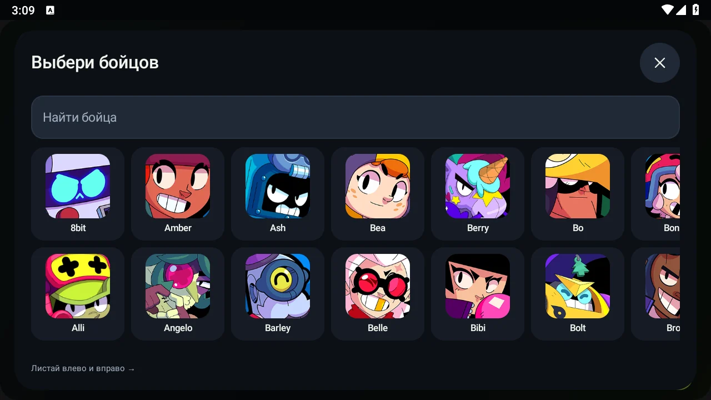

XLAMBOT / ANDROID
xlamBOT: покажи, как он играет
Для друга, обзора или своего канала. Здесь — настоящая запись игры, экраны приложения и короткое описание без выдуманных результатов.
Нужно подробнее? Полная документация с поиском, примерами и разбором настроек →
Новая 1.2.5 — в настоящем матче
22 секунды непрерывной записи с работающим xlamBOT 1.2.5: движение, атаки и панель бота. Скорость игры сохранена, музыки нет. Вертикальный ролик подходит для короткой публикации; отдельный бой не гарантирует результат следующих матчей.
Ещё одна запись игры
17 секунд реального матча с работающей панелью xlamBOT. Запись показывает движение и атаки. Это демонстрация отдельного боя; результат следующих матчей может отличаться.
Как выглядит приложение



Коротко о xlamBOT
xlamBOT — бот для Brawl Stars на Android. Распознаёт экран, двигается, атакует и использует способности. Три стиля, очередь бойцов, обычный Autododge и статистика доступны в Free. Скачать APK можно бесплатно с официального сайта.
Plus добавляет усиленный Autododge, AutoAim с упреждением, режим кустов, ящики и кубы усиления, ускоренную реакцию и доступные на устройстве GPU / NNAPI. Точное сравнение Free и Plus →
Не обещай гарантированные победы, конкретный прирост кубков, отсутствие риска для игрового аккаунта или совместимость со всеми телефонами. Работа в фоне и при заблокированном экране не поддерживается.
Официальные ссылки
- Сайт и скачивание APK
- Установка и первый матч
- Канал @xlamModz
- Plus и «Приведи друга» — каждые пять новых подтверждённых друзей дают пригласившему 10 дней Plus.
- GitHub: APK, история обновлений и отчёты устройств
Для авторов обзоров
Можно использовать наши скриншоты интерфейса и демонстрационную запись для обзора xlamBOT с указанием названия и официальной ссылки. Сохраняй смысл записи: не выдавай монтаж за непрерывный тест и не добавляй обещания результата. Названия, персонажи и игровые изображения Brawl Stars принадлежат их правообладателям; проект не связан с Supercell.
Лучший обзор — собственная проверка: покажи модель телефона, версию Android, запуск, движение, атаку и переход к следующему матчу. Если обнаружилась проблема, приложи шаги и короткое видео в отчёт.
GitHub · Что нового · На главную
Проект поддерживает Olegu621 · Обновлено: